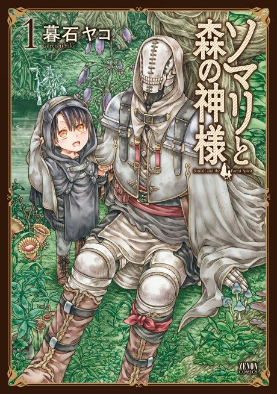

Anime
Anime
Manga2020 · Adventure, Drama, Fantasy
Somali and the Forest Spirit
ソマリと森の神様
AniList7.6
Animeter—
Episodes12 ep
MangaUnclear
Is it worth pushing through?
Built from what visitors report across all 12 episodes.
Loading reports…Checking what other people said about this one.
Sign in with your email at the top of the page to add your report.